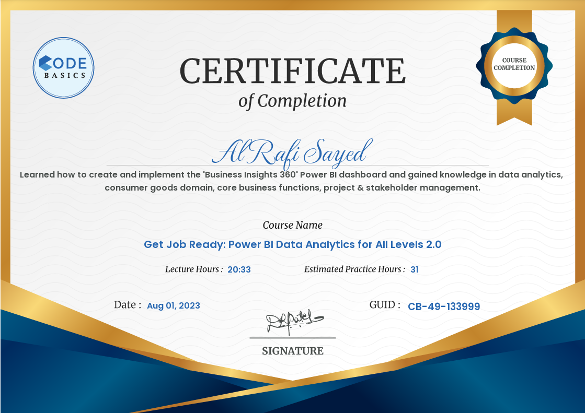

PowerBI Certification
- Intro and Column Transformation.
- Merging and Appending.
- Introduction to Dax.
- Simplified Data Warehouse.
- Data Exploration Using SQL,Star Schema,Fact vs Dimension Table.
- Load and Connect Data With MySql.
- Create Calcualted Columns in power query Editor.
- DAX: Filter Context,Calcute to Change Filter Context,All and AllExcept,Direct Filter and Filter Function,Dax Calculated Column.
- Data Modeling & Calcualted Columns.
- Layout Design.
- Data Validation Set Up In PowerBi Seervice.


In this PowerBI project, I've acquired a diverse skill set encompassing a range of techniques.
These include creating custom data columns using Calculated Columns, formulating advanced calculations with Measures in DAX Language, and
structuring data relationships through Data Modeling.
I've also learned to enhance report interactivity with features like Bookmarks and Page Navigation,
as well as dynamically adjusting titles based on filters with Dynamic Titles.
Additionally, I've gained insights through KPI Indicators and Conditional Formatting while ensuring data accuracy with Data Validation.
Leveraging Power BI Services, I've become adept at sharing and publishing reports, and I've enabled automatic data refresh through Personal Gateway Setup.
Moreover, I've familiarized myself with essential business terms such as Gross Price, Pre-invoice Deductions,
Post-Invoice Deductions, Net Invoice Sale, Gross Margin, Net Sales, Net Profit, COGS, YTD, and YTG. Lastly,
I've developed various views tailored to different business aspects: the Finance View for financial statements and trends,
the Sales View for customer and product performance analysis, the Marketing View for product and market insights,
the Supply Chain View for forecast accuracy and metrics examination, and the Executive View for a comprehensive overview of the entire business.
Credit Card Weekly Dashboard
Project Objective
To develop a comprehensive credit card weekly dashboard that provides real-time insights into key performance metrics and trends,
enabling stakeholders to monitor and analyze credit card operations effectively.
Project Insights- Week 53 (31st Dec)
WoW change:
• Revenue increased by 28.8%,
• Total Transaction Amt & Count decreased by 13.48% & 11.00%
• Customer count decreased by 15.89%
Overview YTD:
• Overall revenue is 57M
• Total interest is 8M
• Total transaction amount is 46M
• Male customers are contributing more in revenue 31M, female 26M
• Blue & Silver credit card are contributing to 93% of overall transactions
• TX, NY & CA is contributing to 68%
• Overall Activation rate is 57.5%
• Overall Delinquent rate is 6.06%
The objective of this project is to design and develop a dynamic and interactive Car Sales Dashboard using Power BI.
The dashboard will visualize critical KPIs related to our car sales, helping us understand our sales performance over time and make data-driven decisions.
Project Insights
1. Sales Overview:
• Year-to-Date (YTD) Total Sales Difference 70.84M
• Month-to-Date (MTD) Total Sales 54.28M
• Year-over-Year (YOY) Growth in Total Sales 23.59%
2.Average Price Analysis:
• YTD Average Price Total Average Price Decreased - 0.22K
• MTD Average Price 28.25K
• YOY Growth in Average Price Decreased -.79K
3. Cars Sold Metrics:
• YTD Cars Sold Total Sale Quantity Increased 2.62K
• MTD Cars Sold 1.92K
• YOY Growth in Cars Sold 34.57%